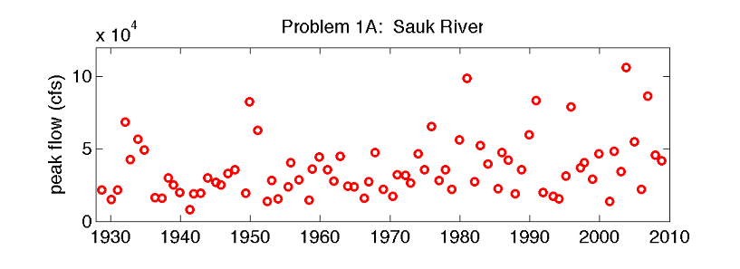

Homework 6#
Problem 1: Continuous Bayesian Estimation of Flood Frequency#
The “100 year storm” is a storm with a rainfall total that would on average be met or exceeded only once every 100 years, and therefore the storm has a 0.01 chance of occurrence each year. For any “k-year storm”, its probability of occurrence in one year is 1/k, where k is the return period in years. Infrastructure is often designed to handle the flooding due to some k-year storm.
Based on long-term climate records for New York City, the “100-year storm” was previously estimated to be 7.2 inches of rain in a 24-hour period. This “7.2 inches in 24 hours” storm (the “100 year storm”) has been used to design infrastructure in New York City. When this design limit is exceeded, flooding can occur.
During the 20th century, this limit was exceeded only once, during Hurricane Floyd in 1999. However, in the 21st century so far this limit has been exceeded many more times. A storm in April 2007 produced 8 inches of rainfall in a 24-hour period. Another storm in August 2011 again exceeded 7.2 inches in 24 hours. Hurricane Ida broke rain records in September 2021, and most recently a storm in September 2023 exceeded this limit. The table below summarizes the time periods and the number of times this design limit (7.2 inches in 24 hours) was exceeded within each time period.
Note
Unlike what you will do in many hydrology classes, which is to calculate the return period across a range of different precipitation or streamflow values, we are focusing here only on the probability of 24-hour storms exceeding 7.2 inches of rainfall because this is a critical design number for New York City. The city of New York released a design plan in May 2021 that you may be interested in taking a look at. Note that they use different rain thresholds for different design elements (e.g., sometimes hourly rain rates matter more, as is the case for the 30 October 2025 storm, when 2 inches fell in less than 30 minutes), so the actual critical design numbers vary more than what we’re examining here. You may also be interested in reading recent news about this problem. Recently, the New York Times wrote about the increased rate of flooding and what options the city has to deal with it. Other news articles include one from NPR, one about Hurricane Ida from the New York Times, the September 2023 storm, and August 2024 extreme rainfall in the northeast. Note that in 2024, nearby areas flooded, but 24-hr precipitation in New York city did not exceed 7.2 inches. The news articles are not required reading to do the homework.
time period |
# of years |
# of storms |
|---|---|---|
1900-1999 |
100 |
1 |
2000-2009 |
10 |
1 |
2010-2019 |
10 |
1 |
2020-2025 |
6 |
2 |
In this problem we will use Bayes’ Theorem to see if the 7.2-inch storm is still a 100-year storm. In other words, we want to find what k-year storm events of this magnitude corresponds to, if not 100-years.
A. Download and plot the prior pdf of a >=7.2-inch storm occurring in a given year from the data file NYC_precip_priors.csv. This dataset shows the prior distribution of the chance that New York City will get a 7.2-inch storm in a given year, which has a mean p = 0.01, corresponding to 100 years (1/p = 1/0.01 = 100).
(Note that the variable labeled “PDF” represents the probability of the storm frequency (or return period) falling within that interval and therefore includes the interval width, such that the sum of the pdf values alone equals 1, and the cumulative sum of the pdf is equal to the cdf.)
There is some uncertainty about the original likelihood, so we want to determine:
What are the mean and 95% confidence interval of the probability, i.e., where does 95% of the PDF fall between?
To what k-year storm (expected return period) range do these values correspond?
B. Apply Bayes’ Theorem at each time period of interest (see table above) to update the the pdf for the 7.2-inch storm.
P(A|B) = P(B|A) * P(A) / P(B)
In this problem, A is the true likelihood of the storm’s occurrence, and B are the events we have observed. For the first time peirod, use the pdf from the data file as the prior pdf, P(A). For each subsequent time period, use the posterior pdf from the previous time period. The likelihood P(B|A = p) that the storm would be exceeded m times in n years (event B) for a storm probability p (event A = p) is given by: P(B|A = p) = scipy.stats.binom.pmf(m,n,p), where m is the number of storms, and n is the number of years.
Calculate and plot the posterior pdfs of the 7.2-inch storm’s probability after each time period.
Calculate the the mean and 95% confidence interval of the return period each time.
C. Discuss the following based on your results: How much did the mean and 95% confidence interval return period change from the original prior return period to now? What does this indicate about the “true” frequency of the 7.2-inch-storm? To what k-year storm does this mean correspond to now?
Problem 2 (note: differs for CEE 465 and CEWA 565):#
For CEE 465: Statistics Synthesis#
(Your CEE 465 final exam questions will look similar to this. Include with your regular homework submission.)
You are given the below dataset of annual peak flows on the Sauk River:

(Note, you do not need to do any actual analysis here)
For each of the following questions about this dataset, I want you to answer:
How do you ask this question statistically?
What tools should you use to answer this question? (think of techniques we’ve learned in class)
What should you be careful about? (think of caveats and requirements of the tools you’re recommending).
A. Presume some logging occurred in the watershed in 1970. Are peak flows higher after 1970 than before 1970?
B. Presume some logging occurred in the watershed in 1970. Have peak flows become more variable after 1970 than before 1970?
C. If the mean annual peak flow has increased to above 50,000 cfs, the town will rebuild the levees. What are the chances that our statistical test would fail to identify this change?
D. Has there been a trend in peak flows between 1930 and 2010? How fast are peak flows changing, and is this trend significant?
For CEWA 565: Project Update#
Upload this part of the assignment as a separate PDF or Word document to “Homework 6 Project Update” on Canvas.
Submit an updated draft abstract and introduction section, along with draft data and methods sections. In the data section, describe your dataset, your study location, and how the data were collected. Discuss the quality of your data. Do you need to take into account any erroneous values or uncertain numbers before you start your statistics? In the methods section, describe how the data are analyzed, and what statistical methods you are using to address each of your science questions. Discuss why these chosen methods are appropriate for your project, and if these methods have limitations or built-in assumptions and how those might affect your conclusions.
Now is also a good time to update your paper introduction. Have you reviewed the relevant scientific literature for your problem? What other similar studies exist? Does your paper have proper references? (Look at peer-reviewed scientific papers in your field for examples of how an introduction and references should be formatted.)
(the rubric for the final report is available for your reference here)